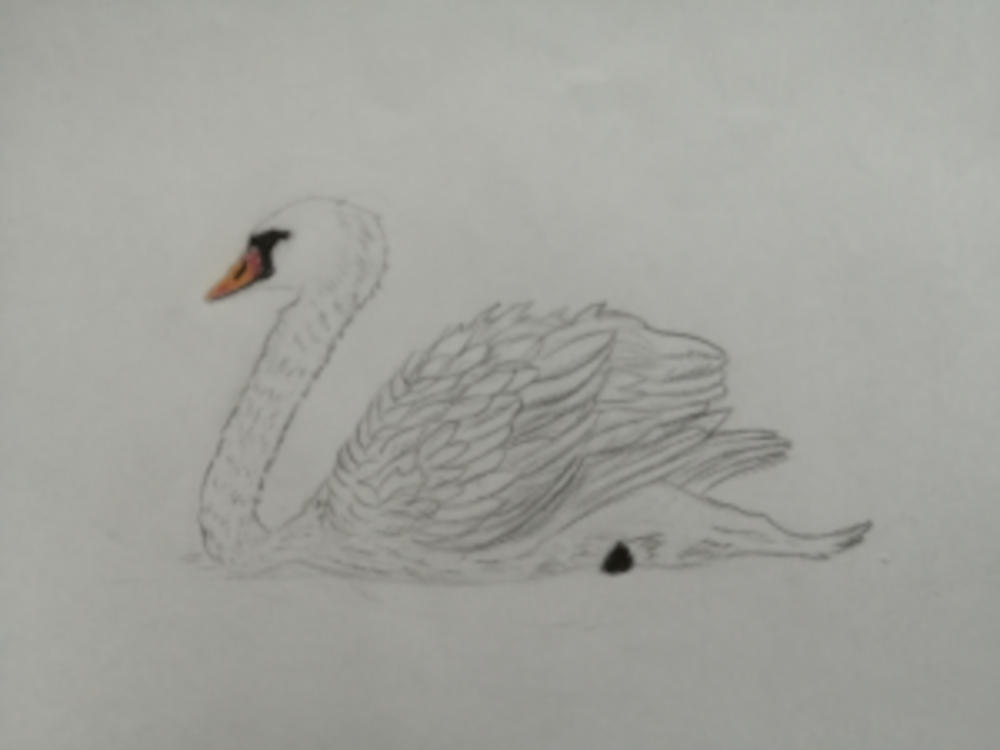
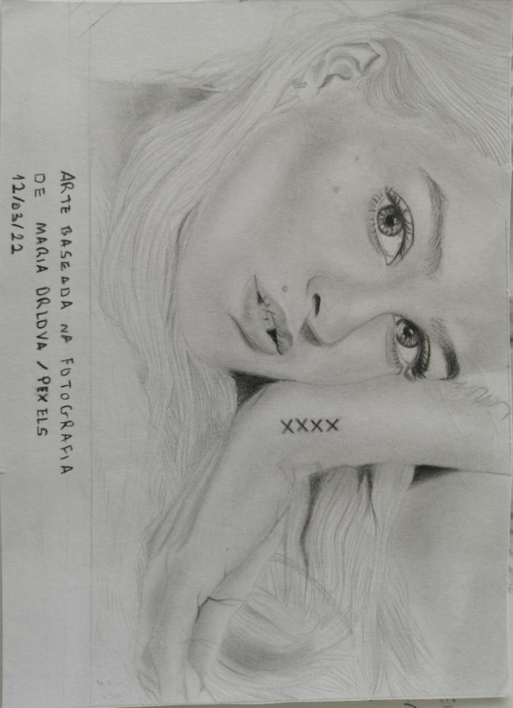
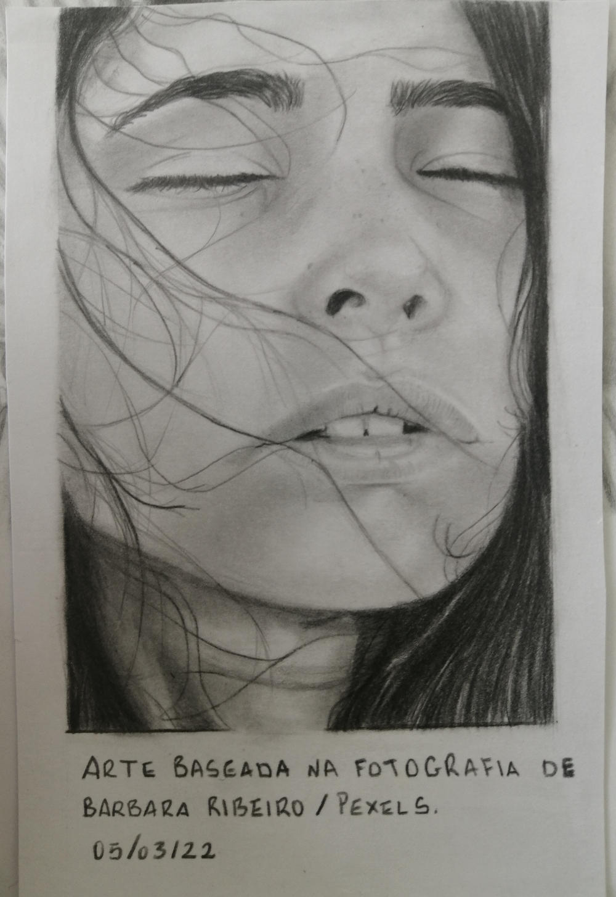
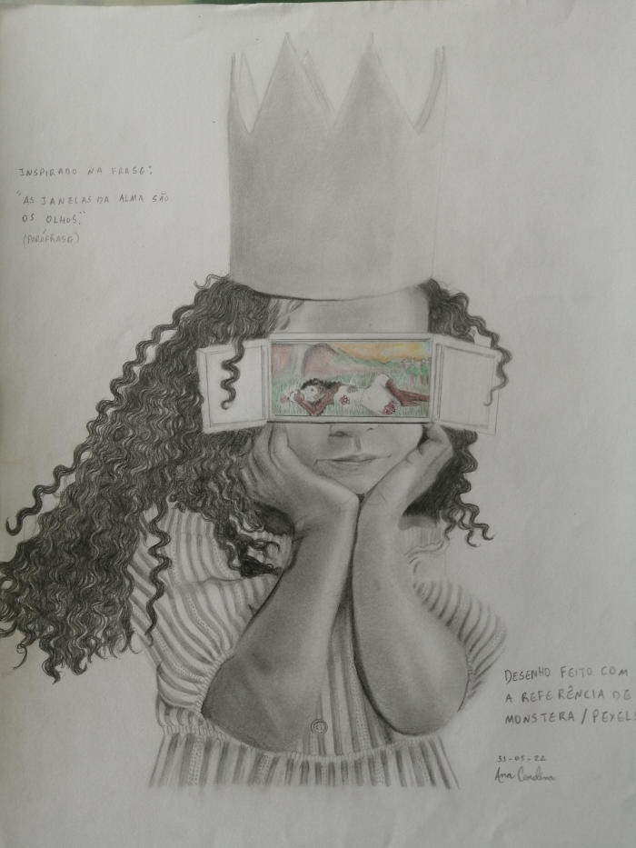

Desenhos em papeis a seguir:
Lindo Cisnei em miniatura

Baseado na fotografia de Pixel2013 em Pixabay
Pose

Baseado na fotografia de Maria Orlova em Pexels
Rosto jovem ao vento

"Os olhos são as janelas da alma"

Baseado na fotografia de Monstera em Pexels